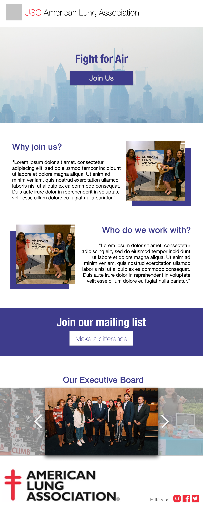

USC American Lung Association
We need a new website!
The USC American Lung Association (ALA) needed new website! As campus clubs move online, ALA found themselves
falling behind with a lackluster website with no cohesive design or affiliation to their Instagram.
My goal as a web designer...
My team and I worked to create an appealing website so ALA may:
- Create a positive & professional first impression of the club
- Align their website with their instagram promotional material
- Enable easy sign up to their mailing list
My team
I worked on a team of 4 other designers from a club called Innovative Design at USC! We perform pro-bono design/coding/photography for USC organizations.Why our solution achieved the client's goals
After 8 weeks of client conversations and implementation into Webflow, my team and I arrived at a solution for USC ALA. Check out the differences between the versions in bulleted comparison below.
Old Website
- No clear logo or branding
- Missing a navigation bar / hamburger menu
- Lack of call to action (CTA)
- Bad photo alignment
- No color scheme or theme
New Website
- Clear logo in the top bar
- Navigation bar for quick access
- "Fight for air" call to action button
- Left alignment and consistency
- Royal blue color scheme to match their branding
Please visit https://alausc.webflow.io/ to check out the NEW & IMPROVED USC American Lung Association website.
How did I get to the solution?
To arrive to the solution you see above, I (along with my team) embraced our differences and emphasized inclusivisity throughout our design process. I did this through researching the issues that the USC ALA focuses on like tubercolosis prevention, lung cancer awareness, and supporting research through philanthropy. With this context for the community which I will serve, I set out to devise solutions!
Defining the target user
This is an on-campus organization, so the target users would be USC students. However the user base could include:
- USC Students
- External organizations looking to support financially
- National American Lung Association members
Identifying the old website's shortcomings...
USC ALA offered up some of their pain points through stakeholder meetings like reaching a wider audience, boosting engagement, and fundraising money. However, I identified several pain points from a design perspective such as:
- Images labeled with their file (i.e. image123.png)
- Little to no color throughout the page
- Terrible website name => "coughusc.com"
- Poor use of whitespace
- No call to action or easy access to mailing list
- No links to social media accounts
Connecting to the clients goals...
USC ALA aimed for several goals:
- Create a positive & professional first impression of the club
- Align their website with their instagram promotional material
- Enable easy sign up to their mailing list
Putting it all together!
After requirements gathering and research, I began iterating on possible designs.
Low Fidelity Mock-up

Mid Fidelity Mock-up
Final Version
This final version is a combination of my designs and my teammate's designs. Even so, it was my responsibility to implement the designs in Webflow, and you can view the final version at https://alausc.webflow.io/.

Reflection
I had so much fun with my team! It was really rewarding for me to join a design TEAM (emphasis on TEAM)! I've always worked as the only
designer on a developer team or at a small company, so having others critique my work and teach me about their design processes gave me a whole new
perspective.
I also really valued designing for an organization with a great cause. USC ALA aims to improve lung health and prevent lung disease through research,
education, and advocacy. While I'm not a part of the club, it felt as if I was contributing to the cause in my own way. Overall, this particular client
was really rewarding to work for, and I'm so proud of team!